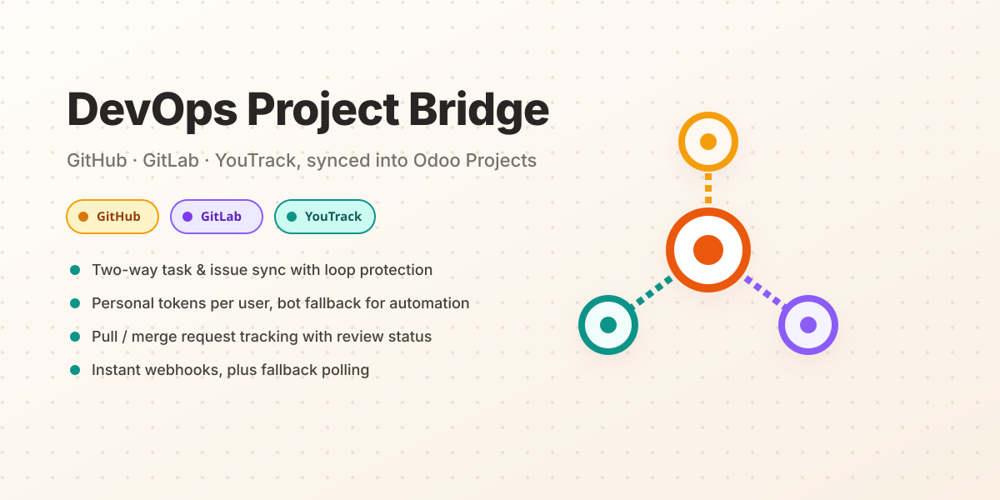
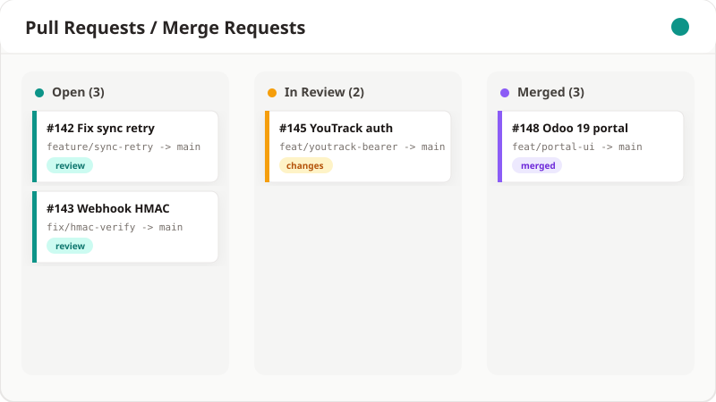

Connect Odoo Project to GitHub, GitLab, and JetBrains YouTrack. Tasks, pull requests, comments, and milestones stay in sync in both directions, attributed directly to the developer who made the change.

Every capability below works identically across GitHub, GitLab, and YouTrack for both cloud and self-hosted options.
Task title, description, stage, assignees, and milestones flow to the remote issue, and remote edits flow right back, with a recursion guard that prevents update loops.
Every internal user links their own Personal Access Token. What they create or comment on in Odoo shows up under their own external identity. Not a shared service account.
Configure a fallback service account per server to handle webhook ingestion, cron polling, and any action that doesn't have a matching personal token.
A single verified webhook endpoint handles all three providers with HMAC / secret-token authentication. An optional hourly cron catches anything a webhook missed.
Branches, review status, merge commit, additions/deletions, and files changed. All auto-linked to the originating task via #123 style references.
Every inbound and outbound event is logged with its payload and outcome. Failed events can be replayed in one click once the underlying issue is fixed.
Cloud teams and self-hosted / on-premise teams are both first-class citizens.
| Provider | Cloud / SaaS | Self-Hosted | Authentication | Webhook Verification |
|---|---|---|---|---|
| GitHub | github.com | GitHub Enterprise Server | Classic & Fine-Grained PAT | HMAC SHA-256 (X-Hub-Signature-256) |
| GitLab | gitlab.com | GitLab CE / EE Self-Hosted | Personal / Project Access Token | Secret token (X-Gitlab-Token) |
| YouTrack | *.youtrack.cloud | YouTrack Standalone Server | Permanent Bearer Token | Bearer secret comparison |
Admins register a server once. Every internal user links their own token. A single webhook endpoint verifies, logs, and routes every inbound event, with a context-flag guard that stops sync loops instantly.

A dedicated kanban board tracks every pull / merge request across every connected repository. Branch names, review state, and merge status all at a glance, auto-linked back to the task that started it.
Install the module, register a server, and you'll have your first synced task within minutes.
Licensed under LGPL-3 · Maintained by All Things Toasty Software Ltd